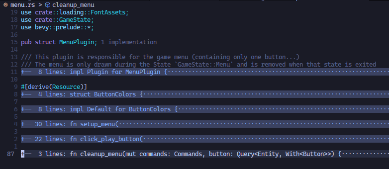
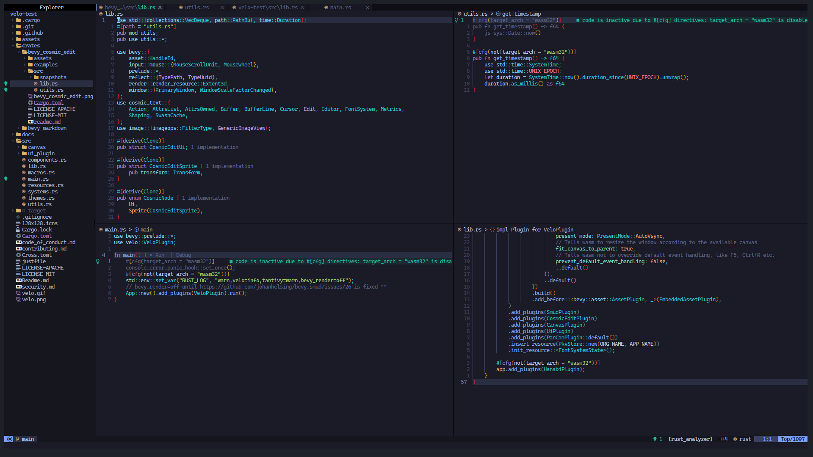

Decoding an HTML is not a crime!
I bought this domain, when the twitter dev community was talking about how decoding a html website was a cyber crime.
Wait let me just...
We want to be clear, this DESE hack was more than a simple “right click.”
— Governor Mike Parson (@GovParsonMO) October 14, 2021
THE FACTS: An individual accessed source code and then went a step further to convert and decode that data in order to obtain Missouri teachers’ personal information. (1/3) pic.twitter.com/JKgtIpcibM
Oh cool, I can embed tweets on mdbook 🥂. Let me make this clear the so called "right click" was the act of cyber crime, well according to him anyway. This assumption that HTML devs are cyber criminals, was hard to believe for me/us (the geeks). But for the unaware it is foreign entity that is used by cyber criminals.
Well, for one HTML is not a programming language! And don't mix hackers and cyber-criminals together. Hackers are a kind of beautiful creatures, driven with curiousity and passion. They explore to expand the limits of human potential.
The governor is speaking for the public. All I am sure is that the dev who created the website were not given specific instructions to safely store the private data. I'm not sure.
I don't even know how can I explain this...
HTML is like a dictionary, that has words and its definition. HTML is used by computers to describe a webpage. Saying "building a dictionary is a crime" is itself a crime. It denies progress.
Subscribe to my Substack
How to Deal with Content Sharks
This is a living document to fight against the content-thieves/copyright-infringement, I'll be updating this once in a while to keep up with the latest updates. Note: I'm not a lawyer, and this is not a legal advice. But a way for you to understand just the basics. If you want legal advice please consider contacting a lawyer near you.
Quick Intro into Content Creation & Digital Content Creators
The act of creating different types of creative works to promote something. People post different types of content on social media to interact with their followers, but what is being referred to here is the content that is used to market something to a digital audience. Most often it is to promote a business or a service.
Different platforms are used by digital content creators to promote their creative works. Most widely known content publishing platforms are:
- Social Media
- Blogs
- Podcasts
- Video Platforms
- Case Studies
- White Papers
- Infographics
Digital Content Creators focus on promoting their creative works for:
- Marketing
- Public Relations
- Business
- Journalism
- Literature
- Media & Entertainment
Most widely used content types are of the follows:
- Texts
- Graphical
- Videos
- Audios
There are two main types of content creation tools, which are Cloud based Content Creation & On-premise Content Creation. And the Content creators are often affiliated with either a Large Enterprise or a Small & Medium Enterprise (SME).
You might have seen different types of content promoting different services of different market industries such as:
- IT & Telecom
- Travel & Hospitality
- Retail
- Education
- Healthcare
- Media & Entertainment
As a content creator, you might be often trying to increase engagement and reach of your creative media works. Promoting different services and products are mostly how different content creators earn revenue for their efforts.
As a content creator you also have liabilities. You have to keep engaging your audience or you might lose engagement. But that's not all. You should have an eye out to keep the content sharks out.
The Content Sharks who steals your creative works
Now for the fun part. Actually it's not all fun, it's soo stressful & tiring to deal with the content thieves. The ones who tries to use your hard work and earn revenue for themselves without crediting you. It's a quick way for the thieves to earn profit under your name. Sometimes, you might have to deal with someone much more popular than you, who has a bigger network & a wider reach. And if you don't have any security system protecting your creative works, you are vulnerable to getting your profits reaped by someone else.
Sometimes people using your content for promotion won't hurt your marketing efforts. And most often you gain traffic from the people who tries to use your creative works. But when people tries to use your work without giving any attribution and says it's their own independent efforts, that calls for a copyright violation issue. This is where the difference between content usage and content stealing comes.
Creators have bird eye view over their audience. And sometimes they try to copy your work, saying it's their and tries to earn profit on your behalf. And without any attribution you are losing any profits that was rightfully yours. I'm not saying all content creators are like that, but there are people who do this. I have seen and experienced this in the frontlines. And this article is a type of guidelines to fight against the people stealing content.
And if you are one of the accidental content thief, just give us some credit in your use. So that we may keep producing content for you and the actual audience. This is just my opinion. Not everyone would be readily agree for you to use their content. So probably ask them first, if it's okay to use it for your personal or commercial use. I believe most content creator would want to have other people using their creative works, to gain a wider reach, which was not available to them before on their own network.
How to prevent people from stealing your content?
Some of these points are solely available to use on a specific platform. Some social media such as Instagram doesn't have clickable links. It's a way for the users to stay within the application and not leave to a 3rd party platform. It's said to be a security feature. But being able to have an option to still continue your marketing efforts outside a single platform would give you more autonomy.
I once had my X (Twitter) account banned as I retweeted some Cyber Security content. After clarifying with staff that I was not spamming or abusing the platform, I was able to revoke the banned status. It was then I realized I need to have a platform where I could be myself, without getting concerned if what I'm speaking is against the community guidelines. Also using your own platform, gives you the freedom to earn more revenue.
So, how do you actually fight against the people stealing your content? These are a few points I have identified to reduce content stealing efforts. Note that you can't completely stop people from stealing your content, but these steps could reduce their efforts in trying to steal your efforts.
- Have a system in place where you could track your followers. To find where a traffic is coming from. It not only helps in identifying these violators but also gives you an insight into how good your marketing efforts are.
- You could also use internal links to link within your marketing platform. This helps you in keeping the audience stay engaged with your content. People who tries to steal your content are too lazy to even notice these internal links. And if they copy without modifying these internal links you are able to investigate the unknown traffic coming into your platform.
- You could set a copy trigger alert to notify you when someone tries to copy the content from your page.
- You can use DMCA or Copyscape badge on your website to inform users that your content is protected.
- Create a content usage guidelines for audience to use and share your content ethically.
- If you suspect someone to have stolen your content, gather proofs (screenshots) and submit a DMCA takedown notice.
- You could also get a free consultation from an Intellectual Property Lawyer and file a lawsuit.
For social media specific prevention strategies:
- Once you are aware of the similar content part of your network, you could deny them further access by blocking them. Gather proofs from your marketing analysis tools for the traffic that leads to the similar content's network. And submit a DMCA takedown notice.
Case Studies
Getty Images sued AI art generator Stable Diffusion for CopyRight Infringement
Stable Diffusion generated AI art which contained Getty Images watermark. It was then they realized, Stable Diffusion was using their licensed images. Even though it was transformed, there were cases where Getty images watermark appears on their generated art. Getty images have granted license to use their images to different AI generator. But Stable Diffusion was doing this without permission. This was an ongoing lawsuit.
Read More
- Copyright Infringement Lawsuit in the US covered by Verge
- Stable Diffusion goes to trial against Stable Diffusion for Copyright Infringement Lawsuit in the UK
A Free Software under GPL license was modified and used by a company internally to promote their services
Recently I read in a forum (link will publish soon), about a free software used by a company internally for promoting their services. As soon as the community was made aware of the violation against GPL license. The company was prompted to publish their privately held altered-free software source for the public.
Further Resources
- https://blog.hubspot.com/marketing/state-of-content-marketing-infographic
- https://blog.hubspot.com/marketing/internet-content-theft
- https://blog.hubspot.com/marketing/ethically-steal-content-marketing-ideas
- https://www.futuremarketinsights.com/reports/content-creation-market
- https://influencermarketinghub.com/habits-content-creators/
- https://www.contentpowered.com/blog/prevent-blog-posts-stolen/
- https://moz.com/blog/whats-fair-about-fair-use-defending-a-copyright-infringement-claim
- https://www.socialsavvyhq.co/resources/how-to-catch-content-thieves
Experimenting With Rust
First of all, I feel like just mentioning the word "Rust" could cause confusion. I always type as Rust Lang or The Rust Programming Language, whenever I had to mention it. But it seems rather, unnecessary. Atleast my domain name "decodedHTML.com" could be a clue pointing Rust in the right direction. :P
I finished The Rust Book. Now what? Tried building a simple REST API using Rocket, Diesel and Serde. Feels like I am missing a lot of steps. So had to build my own project.
My first official Rust project was a substitution cipher generator. It was taught in CS50 using the C language. I loved the cryptographic algorithm that, I recreated it in Rust. Link to Cipherio Repo. It is CLI application that just does one thing perfectly. Cipher a text!
Recently I tried building a accounting program. In this I started to build everything from scratch. (I know its a bad idea; to reinvent the wheel) But I haven't had much experience in systems programming. This could teach me a lot. After all I am understanding a lot. I am constantly referring my degree textbooks to understand different archetecture and practices. I even have my own personal resources goldmine, which I have bookmarked over the years (not that long though).
In this program I started by making a simple data structure to handle a user, then figured I need to store it in some long term memory, rather than the CPU memory for doing all the extensive tasks. So my first thought was to integrate a database into it. But I wanted to explore the beautiful capabilities of Rust. So right now built a json file to store the user dataset. By doing so, I just learned the steps required to read and write local files.
During my development I found out that I didn't feel confident in structuring my program. I'm jumping back and forth between the reference for packages, crates and modules in the Rust Book. There are main, lib and other modules. My current plan to structure the program goes like this. Create just the basic controls in main file. Create the widely used data structures and algorithms used by the program in lib. And create and group the data structures and algorithms that can be used in other programs as modules. Also a json server would be storing data in an order. So to implement the best search algorithm we need to make the dataset sorted. Rust has a sort_by function just for sorting. So no need to implement a seperate sorting algorithm. Also I tried creating one but I was stuck at implementing a "not-a-reference".
Rust language would be rewriting the algorithms... Which could be a better memory efficient algorithm. A world where memory is not wasted, much! I remember when I was working with JavaScript I had to implement one of the worst program logic, as said by my senior developer. I argued that I haven't completed the logic. Rust eliminates any more such situations. It won't even compile if I/you did something bad. It really helps you to work on perfecting your algorithm. Less wasted memory is what we needed all along.
Power of Rust in the palm of my Discord Server
Let me awkwardly explain. The power of Rust, in the palm of my hand. Well my hand is interacting with the discord application on my device. And I am really trying to leverage the power of Rust, via Discord. So my beginning statement is still true. 🥂
Serenity is a Rust library for the Discord API
I just started exploring what all I am able to do with it. This is my adventure to find what it's limits are?
There are examples on the Serenity repository on Github. Which shows simple tasks that can be done. Also there is the rust doc generated for the Serenity crate. Both can contribute to my learning phase of the art of war using Serenity.
Why I choose Rust?
Rust is the most loved programming language. If you compare different languages, Rust comes first. But it hasn't matured enough. But since the language is most loved, I could predict that it could be growing faster.
WASM Support
Also WASM, Rust has good support for WASM. I think that's where the Rust ecosystem is moving towards. I am not really sure, just my observations, by skimming through different dev communities.
Can you even prototype, bro?
Then Rust has a problem, it won't compile if the program is not implemented properly. Which makes it harder to prototype faster. Which is good if you think about it. It makes you write better programs. And you will really think like a true programmer. Isn't that what we want.
🤩 BLOCKCHAIN 🤩
Also I really want to try using the Substrate framework. It is a framework written in Rust, to build your own custom blockchains. We all know how hyped the blockchain, crypto, web3 industry is. And since Rust is good at handling memory, I think the Metaverse would probably be mainly built using Rust.
Dude, grow up!
But right now most libraries and frameworks are really young. How I know that? Well for one thing, most libraries and frameworks are still not even v1. V1 is mostly considered the initial stable version, fit for production use.
Contributing to an opensource learning project built using Rust's Bevy game engine
Recently I stubled upon an issues in April's this-week-in-rust.org's call for participation section. The issue was of an Rust learning project - Velo, a learning app project for brainstorming. As I was planning to get familar with game development technologies I loved the fact that this project was built with Rust's game engine Bevy. And as of the time of this writing Bevy is now on their latest v0.11 release, which has WebGPU support built-in. I really want to play with the shaders to create those creative-coding/generative artworks.
Surfing the Codebase
And so... I have been trying to use just Neovim to get comfortable in using Rust Lang. To be efficient and productive were my sole goals, at the time I'm writing this text. As I was getting distracted by a lot of social media platforms. I was wasting a ton of time. So my decision to switch to neovim. By making it a bit harder to use the mouse I'm seeing a lot of changes. I keep forgetting the shortcut keys if I'm distracted. Especially the ones I set in Neovim. I then try to remember that which switches me back to the flow state of programming. Which is what cypherpunks do! They Write Code! 😼
Initially I started using VS Code but the amount of times I got distracted was getting higher and higher, with all those extensions that was taking up space on my laptop's display. So many GUI taking up display space. It's a competition for them to be easily accessible. But at the same time I think it kills the IDE. You might say why not customize it. But I don't think I want to. I might later join as a contributor to VS Code, until then I don't think I want to waste time on doing fancy stuff. Neovim just lets me think and write code 😼.
And I'm using Spacemacs to write this devlog. I'll later try to write this in using Emacs own org mode. But until then markdown is what I'm using to write this. And I'm using Rust's mdbook to bring it you. Everything is a draft until I add it to the summary file (more intructions to generate an online book using mdbook).
Hacking Neovim for lightning fast code navigation
Neovim uses lua for it's configurations. Again saving time to get productive in programming, no need to learn more to customize deeply. I have pushed my current Neovim config commit in a GitHub repository: Lunarvim For Rustaceans. Yeah, I forgot it's actually Lunarvim. I wanted to quickly start working on my contributions. In my opinion and planning setting up Neovim from scratch is the right move to train yourself to be a more productive and efficient programmer.
Finding where each functionalities lies, for quick modifications
I started trying to understand what each dependencies, plugins, modules, systems are being used by Velo. And what their purpose was. And there are different approaches to understand a codebase.
To quickly understand a codebase is an important skill a developer can have. If a developer has trouble navigating unfamilar code, they could waste a lot of time trying to orient themselves.
This quote reminded me to improve my development workflow more efficiently. I started using different Neovim plugins, to help me quickly fix some issue. More specifically, I first installed nvim-tree for the file navigation sidebar. It gave me the power to have an bird's eye view / top-down view of the project. Never have I ever appreciated the use of seeing the file structure before. While using VS Code or any other file explorer included application or an file explorer itself, the ability to see the file structure was always available. I knew it was quick to use it, but I never thought like it was quick to interact with the file structure view rather than any other way. Some ways are just shorter.
The Too Long Don't Read (TLDR)
Okay, I had the file structure view, but there were some files which had longer code. And I was again spending too much time on one area of the codebase. I found some discussions online about enabling folded expressions in the LSP's setup configuration.
Did that and ...

This is what I should have always been doing, just looking at the definition is enough, I could just come back and go through the logic more deeper if it's where I have to be working on. And most opensource friendly projects should have good naming conventions for easy code editing accessiblility.
Split & Jump Windows
Sometimes no matter what all tools you use to skip looking at two places at once, you will need do that sometimes. At that times, spliting the window can make use of your available screen area and provide you with useful information for your current task.

Telescope - Fuzzy Finder
Telescope plugin for Vim/Neovim is an awesome feature. It helps you find, filter, preview, pick. Mostly it's used to find the file or line you want. But it can do even more, like going through the undo history, open most used files, etc. There are a lot of child plugins for the Telescope plugin.
Also setting the oldfiles finder and the live_grep would be incredible useful.
Look Ma, no Mouse!
By this time all I had to do was to adjust some shortcut key configurations and I'm ready to fly through the codebase. Jumping over to the reference/implementation/definition was the keys I configured. It helps me not to waste time on the file navigation, trying to find where the types/definition/function logic are defined.
Rust Analyzer
As Rust was going to be my primary development tool, it was the first language I tried to make my Lunarvim support. And Rust-analyzer was the most powerful tools of them all. All I did was install rust-analyzer through the plugin manager and I was good to go. I had later found out there are lots more features included in rust-analyzer. There are a few LSP client implementation which you find from the official Rust-analyzer docs. One feature any rustacean might find benificial most of the time is the inlay hints. It displays necessary type information about the variables and methods. I installed coc.nvim and ran :CocInstall coc-rust-analyzer to add rust-analyzer support.
I was using a notepad to write down what each types where at one point of my learning to understand a certain function implementation. I know I could use print statements, but using rust-analyzer for such debugging practices was huge time/life saver.
The command to toggle inlay hints were CocCommand document.toggleInlayHint.
I need the words wrapped!
I don't know if the inlay hints can be word wrapped, I mean it can be. But I want an existing solution.
My Rust opensource journey is at the initial stages. But I'm moving forward at a good pace. Maybe because I dabbled with other programming languages before Rust. And what I have understood is that, using the right tools for the job is what makes you love programming. And the Rust language and it's development tools, is what makes my development easier, efficient and productive.
Reloading your programming ammo with the Standard Library
Being familiar with some of the main standard library traits and it's methods is going to help you defeat that bug you're trying to fix, quickly! Are you using some method, that is not giving you what you wanted? Use a different method for the trait you are working on.Debugging Tools
Remove console.logs in Production Code
Do you use console.logs in production? 😱😱😱
DON'T, it's a bad practice! Even if you comment them out, for easier debugging, it shows the developer is not confident about the source code, also it reveals TOO MUCH information about your code.
So, what can we do? 🤔🤔
I found an article that suggests different ways to overcome this. 🤩
The following ways were suggested:
- Use ES-Lint 'no-console', which reminds you to remove console.logs in your code
- Use VS Code's log points
Okay, but what are log points in VS Code. They were a new concept for me, maybe you too. 🫣🫣
Found a blog from VS Code explaining about Logpoints (doesn't pause code), and also auto-attach (pauses code) feature for debugging 🤩🤩
Reducing & Protecting from Eye Strain for Programmers
Recently I tweeted about having burning sensation and tiredness around my eyes. I believe the main reason, I'm having them is due to the amount of time I spent in front of a computer, and my phone.
I got scared, I don't want to stop my programmer lifestyle. And there may arise more such health issues, due to this lifestyle. So I want to make a plan to reduce such issues, and maintain my health. I'm creating this article for the public to benefit from this information as well.I am getting burning sensation and tiredness around my eyes, it's apparently called eye-stress/eye-fatigue 👀
— Rio Jos (@htmldecoder) March 14, 2023
Caused mainly by too much time spent infront of a screen (pc 💻 & phone 📱), also can be caused by less sleep 🛌😴 pic.twitter.com/1sXl7YAT2d
Mainly, this condition is called, eye stress or eye fatigue. Doing a quick search, I was able to find out that it was due to the amount of blue light we receive from the screens. I knew about this, so I tried to buy books to replace my amount of time consuming information, digitally. But still, I'm only making my near focus and missing out the far focus. But that isn't all, bad air quality & less sleep can also contribute to this condition.
Causes as a list:
- Blue light from too much screen time
- Less sleep
- Bad air quality
- Only near focus
So, what should we do?
From the causes list we can come up with a few ideas of our own. But let me provide a bit more, after all you came here.
20/20/20 rule
The 20/20/20 rule states that for every 20 minutes spent in front of a screen, you should shift your focus at something 20 feet away, for about 20 seconds.
Get more sleep
The right amount of time is between 7 to 9 hours. So make sure you get enough rest, your rest is part of your productivity.
Use system built in features to reduce blue light
Most devices has a built in feature called night light that adds an amber tint to the display. You can schedule it to switch on after sunset and switch off after sunrise. Which is kind of weird at first. But it helps in reducing the blue light, and is said to help you sleep better. Also you can try switch to dark themes for various applications, there might be a way to even force dark mode. But it still has some issues. So try using services/applications that support dark mode.
Position your screen
You should adjust the screen you are viewing a few feet away, about an arms distance, below the eye level is appropriate.
Use eye drops
When you are too much focused on the task at hand, you might even forget to blink, which causes dryness and irritation of your eyes. So using artificial tear drops is said to be a good alternative. You can even try to blink more.
Find the right light
Change the lighting of your environment, I used to work without lights, crating a dark environment. Which was cool at first until the eye strain happened. Also try changing your display if there is glare on the screen. You could also add shades to your windows to avoid glares on your digital device.
Get a humidifier or clean up the air ventilation
Dry or polluted air may contribute to eye strain, so try adjusting the heating or cooling, or use a humidifier. You may even relocate to a spot with better air quality. You can even add some indoor plants
Wear blue light filtering eye wear
It is not proven if these eye wear can reduce eye strain. But it is not harmful if you wear them. These are eye wears are said to be specifically designed to fliter out blue light, they have a tint that filters out blue light, similar to the amber tint shown using the night light feature.
My not-really-useless opensource contribution
My very first opensource contribution, was just a fix for a spelling mistake 🤦♂️. I was amazed when it was accepted. But it made me realize, the opensource community was really friendly. And they didn't consider how much big or small it was. They wanted help. And they happily received them. ❤️❤️
But that contribution, kind of made me a bit sad. As I knew what I did was not that important. Actually I felt like a grammer nazi. After that, all I wanted was to contribute more. So I started searching for a lot of opensource projects.
My every search returned lots of really cool awesome projects. I wanted to learn more about every single one of them. But it was not practical to try them all at once. So, I started to really feel the project. There was many variables, that made me want to contribute. 🤩🤩
The different variables such as:
- My familiarity of the stack
- My opportunity to learn about new technologies
- My opportunity to benefit back
- The popularity of the project
- My understanding of the project and it's uses
- The code of conduct, contribution guidelines, license type
- My ability to bring in my community interested
- The capabilities of my system resources and type to help in development
- The project's Ethics, Long term goals & Roadmap
- The readme about the project
- How the project welcommed beginner to contribute
- Coding styles
- Architecture of the project
- Maturity of the project
Even listing them, I realized. There are like too many of such variables, that says this project is better. This race really stressed me out. Everyday, I was looking for the next cool and better project. 😫
Anyway, I kind of backed a little bit. And tried creating my own opensource project. Just to understand what was going on the minds of the creator/maintainer. I again felt a bit of a loser. I really didn't know, what maintaining a fully fledged opensource was like. I read about it. It isn't that same as trying it out yourself.
But then, I tried making my life easier with some opensource projects. I didn't plan to contribute, just want to use a project and to understand it's uses. This blog is one such project. I used Rust's mdbook to create this. It was really cool, minimalistic, and my workflow to share my thoughts were super easy. I didn't have to waste my time, worrying about different colors, designs and styles. I just typed. My focus was better. Then, I wanted more from it. I thought like if I had this feature working, I could get these benefits. And the chase began. I found out that the feature I wanted was said in a previous issue. It was a bit old. I thought, oh no, it won't work, should I leave it. But my love for the project and it's tech stack, made me want to contribute. So, I tried my best to overcome it. 💪
Basically the feature I am talking about was the ability to create a preview on various social media platforms. Currently only the url was shown. So I researched what can be done. I found out that open graph protocol meta tags can be used to create such previews. And it looked really simple. So, I tried adding them. But it was kind of slow. There was no official way to test fast, and I wanted to see the result immediately. My most changes were small. And I have to use not localhost to see the changes on social media platforms. So, I created a github pages to host my book, and then copy paste the link several times on differnt platforms. I also found out that, there was way to test, without actually spamming my follower's feed. By using validators. But there were issues, particularly twitter. Their old way to test the preview was deprecated. And I was not able to find the new way. Anyway, I tried to lower my expectations and to get my feature working on most platforms, not all, most. And now I have a image preview, title and a description. Not much, but looks cool.
Now, as I was closing all those tabs talking about overcoming the issue. I came upon the stackoverflow question and the issue in the original mdbook repository. And I thought, this knowledge of how I made it almost work on most platforms would be beneficial for those are contributing to the project. I'm not able to contribute because, I was just the consumer, I didn't learn about the underlying architecture of the project. So, I post a comment on the issue. On my findings and the various links that helped me through this process. So, that the next person working on this would take less time than me to implement it.
Useless, but the time saved, was not really that useless 😜
Now, my finding can help others such as the contributors, users and maintainers to further grow the project.
In the end, I guess that is what opensource is all about. Helping the next person save time/frustration.
Normalize the use of Inclusive Language
Not many people think about this but aren't we always dealing with some type of communication medium. We have to consider that the communication technology - language; is a powerful resource.
Using different words and sentences invoke different types of emotions in humans.
These patterns are increasing day-by-day. And with AI the patterns get shoved onto our face.
I remember in the humane tech forum, a proposal was made to IETF (International Engineering Task Force). It was about changing the use of "Dark Patterns" to "Deceptive Patterns". But later the use of inclusive language was more accepted standard.
About Me
Hi, welcome to my page. I'm Rio Jos, a newbie in rustacean 🦀 community and fairly ok programmer. Currently I'm doing a undergraduate bachelors degree, in Computer Science.
I love to discuss about FOSS, creative coding and also M E M E S!
For the real geeks out there
I am a great fan of the sci-fi genre. Cyberpunk 🤖 genre to be more specific. Don't get me started on Hacker culture. The nerds who ❤️s to use neon green fonts on command line.